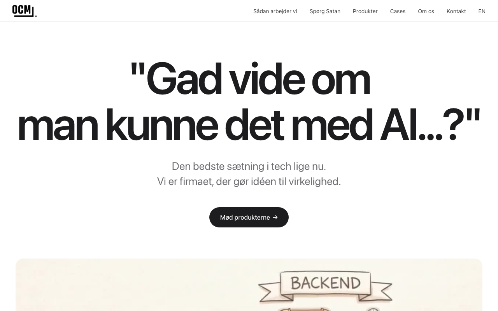

DocZoid
The only AI enabled tool that takes an idea from written document to diagram to presentation — with text and diagrams reused live, so everything is always up to date.
Learn more →Building prototypes that turn into real solutions and companies. What starts as experimental tech in our lab often ends up solving actual problems for real people. When a prototype proves its worth by making someone's work easier or more effective, it graduates from experiment to product.
The only AI enabled tool that takes an idea from written document to diagram to presentation — with text and diagrams reused live, so everything is always up to date.
Learn more →
The entire school's AI assistant. A shared platform for teachers, students, and administrators built specifically for education.
Learn more →
Weekly content in your voice — powered by AI. Content shows up ready to post, written like you on a good day.
Learn more →
From idea to working AI product. Development, prototype-to-production, code audits, and AI consulting for companies figuring out where AI fits.
Learn more →